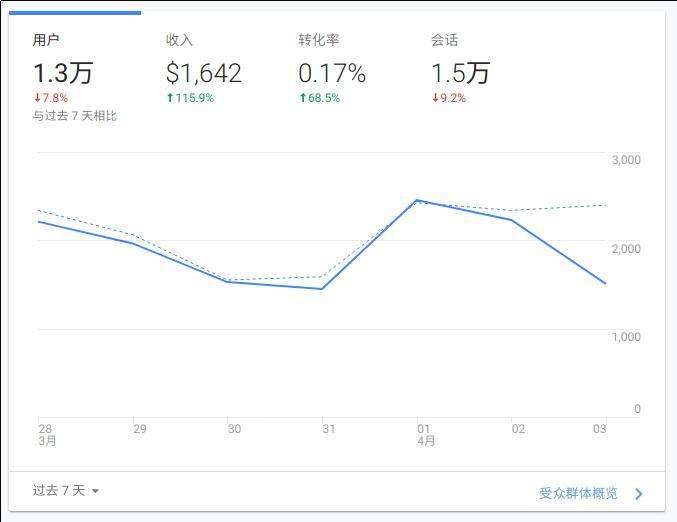
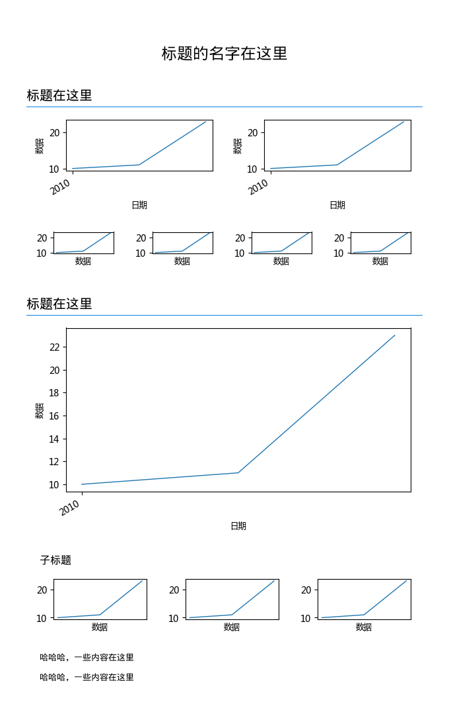

一种 BI 报表配置过程描述 DSL 的设计想法
1. 为什么会想到这个？
简单来说，现在我们在做 BI 报表的实现时，因为过分地关注呈现结果，而正在把过程中最有价值的能力丢失掉。
比如，我们可能一来，就从呈现结果上去考虑我们需要的数据结构是怎么样的：

对于这个“组件”，上面一排指标，下面一个趋势图，我们大概可以用这样的结构去表示它：
[
{
"type": "measure",
"params": {
"measure": ["用户", "收入", "转化率", "会话"]
},
x: 0,
y: 0
},
{
"type": "trend",
"params": {
"x": "日期",
"y": "@measure"
},
x: 0,
y: 300
}
]
只是一个示意，事实上，在真实场景中，这样一个看似普通的呈现效果，其在一个可视化编辑器中要实现的挑战，是要大得多的。它里面有太多的细节的东西要去考虑，而上面的例子，甚至还带有“指标切换”的交互行为。
当然，挑战再大，也仅仅是技术实现层面的事，通过不断完善与扩充前面的那个 json 结构，理论上，我们总可以达到目标。
问题是，我们费尽千辛万苦达到的所谓目标，真的是我们关心的吗？
至少，不是我们关心的全部。
前面的 json 只是一两个组件的片段，要考虑整个报表的配置，那么这个 json 配置的规模要膨胀很多很多，直接的结果，就是这个配置本身，已经是无法让人去阅读里面的信息了，同时，对于代码处理来讲，也变成了一个“独特的”，“针对专一系统”的特定配置文件，即，这个报表配置，只能在你的系统中使用，想针对这个配置作一些“转换”到其它系统的处理，几乎是不可能的。（因为其它的很多系统也是同样的设计思路，它们的格式也同样复杂无比）
一旦我们把“呈现效果”在这个配置中越来越多地表示出来，其实我们也就是在“核心价值”外添加很多不重要的东西。为了使我们的可视化报表编辑器足够强大与灵活，对于像颜色到底是红色还是绿色，趁势图 X，Y 轴范围是多少这样的信息，在 json 结构中可能都会保存下来。
最终，这个 json 结构本身已经没有任何数据价值，它的功能变成了单纯的存储信息。就像你精心编写的，富含注释的源代码，编译之后变成了 0 和 1 的指令，它被存储起来，随时准备被执行。可怕的是，我们并没有源代码， json 结构的得到，是具体配置行为被“即时地”，“带状态地”编译之后的结果。
这个 json 结构是一个结果，而得到这个结果的过程信息，已经荡然无存。看到了一个 10 ，可能是 5 + 5 的结果，也可能是 15 - 5 的结果，还可能是 5 * 2 的结果，减法与乘法代表的意义是完全不同的。
回到现实中的场景来说，对于这个 json 结构：
- 针对单一系统，转换成本，生成成本，非常巨大。
- 无法从中看出报表的逻辑层次。比如第一部分，讲什么，从哪里到哪里，第二部分讲什么，又是哪里到哪里。
第一点本质上是一个技术问题。
在这个 json 中，即有数据内容，又有视觉内容，在完成了一个可视化编辑器之后，你会发现你陷入了一个两难境地。这个编辑器的功能越强大， 这个 json 结构就越复杂，也就越绑死在这个编辑系统中。如果当初你的配置目标，是一个可交互的网页，那么，你很难再为这个 json 结构，写一套生成静态网页的逻辑，其它的，生成位图，生成失量图更不用想了。甚至移动端适配，都可能需要在足够的前提下才能进行。
另一方面，其它系统，想要生成这个 json 结构，也不是一件容易的事，有太多细节的东西。比如再做一个简化版可视化编辑器，得花多大的代价才能提取到这个 json 结构的一个子集出来。
好吧，技术的问题，几乎都有历史可以参照。
- C 语言，不同于汇编被绑定在了具体硬件上。这使得你的 C 代码，通过不同平台的编译器，就可以跑在不同平台上。不管你用的操作系统是什么， CPU 是哪家的。这里的思路，是定义 C 语言，然后为它写编译器，而不是为某个平台上的汇编，写转换程序。
- 高德纳给自己发明 TeX 时，就是一种排版描述的抽象，而不依赖于具体的排版载体与形式。巧的是，后面 Adobe 的 PS / PDF 语言，也是同样的东西，不依赖于具体设备的打印描述。所以，今天 TeX -> PDF 算是一个标准转换路径了，而这两个东西产生的联系也使曲高和寡的 TeX 时至今日仍然可以被使用（否则时代更迭，TeX 排出的东西几十年后就没有设备可以打印了）。
不难看出来，一个抽象的，标准的定义集，是多少重要，以及在时间的推演中将产生多么大的收益。
第二点，原来是跟业务有关的事，不过，后来想想，其实可以推出更多的一些意义。
我们在写文章时，看文章时，文章自身内部，是有一套逻辑关系的，前后顺序，单节层次。而在配置报表，查看报表时，报表其实也有这种类似的逻辑关系（当聚焦一个话题时，数据呈现的顺序，层次是有讲究的）。但 json 结构不像文章，人不能看不说，其内部也无法再反映这种关系了。这里多说一点，逻辑关系与可视化编辑的形式，并不是矛盾的。拿排版来说， TeX 是典型的关注逻辑关系的，但是 Word ，就“正确”使用来讲，如果你在排版一本书，正确的姿势，也是先定义章节的逻辑，再通过样式表处理格式。而不是直接对于一行字去设置它的格式。
丢失逻辑关系，看似没有什么影响，但就 BI 应用场景，及现在行业关注数据资产这些背景来想的话，失去的东西及埋下的隐患，会像病毒一样在系统中蔓延。
你首先碰到的难题是，如何表达报表中蕴含的分析方法，分析思路。就像前面讲 10 的那个例子，分析方法就像加法，乘法一样，但是现在，你只有一个结果，我们是没有办法通过结果去倒推方法的。所以现实里，报表中本身无法表述，我们只能在系统其它层面，加入额外的概念，以具体形式试求达到类似的目的，比如，报表模板，高阶组件等。
顺着这个问题，往后很容易想到，因为只是侧重视觉结果的呈现， json 结构这样的内容，与目前的“处处皆可算法”的潮流，很难结合，本质的核心点在于，你的算法，是在针对如何分析数据呢，还是针对如何排版呈现数据？现在中，我们往往拿着针对后者的 json 结构，去想着做针对前者的事。
如果上一个难题，只是系统能力的瑕疵的话，那么接下来的难题，可能会拷问你做事的意义。
进入正题前，先回想一下我们是如何开发并持续维护应用系统的。典型的，无论你用什么语言，什么形式，B / S，C / S，系统运行于何种平台，一个系统在几年，甚至几十年的维护过程中，最最核心的东西，是它的数据，更具体一点，是存储于关系数据库中的数据模型及具体数据。因为关系数据库的相关定义是开放并且稳定的标准，所以依赖它存在的各种数据，足以在几十年，这种目前看来足够长的时间内，处于一种可以持续维护的状态中。哪怕你的应用系统要重构，要重写，甚至关系数据库本身要换个产品，都没有问题。（现在理解为什么用 Mongo 这种东西作主要持久化存储是多么不负责的行为了吧）
而如果你的数据，没有建立在 SQL 这种超强标准的前提之下，一个因为业务需求而临时确定的超复杂的 json 结构，想要持续维护是不可能的事。
事实告诉我们，无论当初你为了配置那些看起来花哨无比的报表花了多少时间，这套数据报表系统并不会比其它一些应用系统能活得更久。随着系统的迁移变更，这些旧的报表要么进垃圾堆，要么成为阻碍你系统进化的高墙枷锁。
以史为鉴，现在编程语言几乎已经不会再提什么“平台无关”了吧，像 BI 报表这种东西，是不是也应该提提“与具体系统无关”呢。
总结一下：
- 现在为 BI 报表直接设计的，像 json 结构这种数据形式，缺乏必要的抽象，本身也太复杂。
- 因为复杂，输出形式很难扩展，输入端也很难对接。
- 仅仅是为了视觉呈现存储信息，丢失了过程中的表现分析思路，分析方法的逻辑层次等信息。不利于在沉淀的数据中提取总结分析方法。
- 与具体的系统强耦合，不同系统数据无法融合，要么制约系统进化，要么随着系统变化而消逝。
2. 使用一种 DSL
前面说了问题，要避免，或者解决这些问题，参考计算机历史，一种方案，就是设计一个专门的形式来表达“报表配置”这个过程。
我们先把注意力放在这个“形式”上，让这种“形式”充分表达报表配置者的逻辑意图，然后，我们针对这种“形式”开发各种编译器，把它转换到其它目标格式中。我自己尝试简单例子大概是：
TITLE --name=标题的名字在这里
AUTHOR --name=邹业盛
SECTION --name=标题在这里
DATA --header=日期,数据 --body=2010,2012,2013|10,11,23 => data
DEBUG --name=data --data=@data
COLUMN2
CHART_TREND --title=标题 --data=@data
CHART_TREND --title=标题 --data=@data
END
COLUMN4
CHART_TREND --title=标题 --data=@data
CHART_TREND --title=标题 --data=@data
CHART_TREND --title=标题 --data=@data
CHART_TREND --title=标题 --data=@data
END
SECTION --name=标题在这里
COLUMN1
CHART_TREND --title=标题 --data=@data
END
SUBSECTION --name=子标题
COLUMN3
CHART_TREND --title=标题 --data=@data
CHART_TREND --title=标题 --data=@data
CHART_TREND --title=标题 --data=@data
END
TEXT --text=哈哈哈，一些内容在这里 => text
TEXT --text=哈哈哈，一些内容在这里 => text
SAVE --uri=/home/zys/demo.png
我思考，这种“语言”应该有这样的一些特点：
- 是人可读的形式。
- 是人可写的形式。
- 像写文章一样，有层次结构。
- 像看文章一样，从前到后，顺序处理。
- 结构简单，便于代码解析处理。
- 能力方便扩展。我们只是给定形式，由具体的实现再确定具体的标准。
当然，上面的形式，不管是用 TeX ，或者 XML / HTML ，都可以有等价表示的。但 TeX 不好解析处理，而 XML / HTML 对于“可写” / “可读” 这点，又太不友好。所以自己试着弄了一个，至少还好解析的样子。
简单实现了一个生成位图的编译器，上面的代码，可以生成如下图：

其实我觉得位图已经算是比较不好处理的类型了，相应的，要生成 HTML 什么的，同样的办法，还容易处理得多。
3. YY 一些应用场景
3.1. 多种输出格式
这是最直接的一个应用能力。
通过不同的编译器实现，我们可以用“源文件”生成各种目标格式，不光是 PNG / SVG / HTML 这类，还可以是具体应用系统的专有格式。这样，应用系统的变迁就不会影响报表这类资产的积累了。
自然地，多端适配更不在话下了。
拿来自动合成多媒体也行，每天用最新的数据给你讲视频故事。
3.2. 作为其它应用系统的输出目标
报表可以是人配置，也可以是系统生成，这里顺理成章的。之前的 json 结构复杂，其它系统要生成，成本比较大。
但是这种本身就为手写准备的 DSL 则简单得多。
- 可以通过其它数据结构（比如关系数据库）生成报表。
- 可以通过其它逻辑结构（比如组织结构）生成报表。
- 可以通过其它交互形式（比如语音，手势，图片）生成报表。
3.3. 作为专有格式部分嵌入
这个行为，类似 markdown 。网页系统可以支持 markdown 生成 HTML ，自然也可以支持这种格式生成 HTML 。
而在我自己使用的，扩展了 markdown 语法，用来写这篇文章的标记语言中，也可以加入这种格式的支持，目标，可以是一个大的 SVG ，或者是 HTML 片段。（我已经支持了 gnuplot 生成 SVG 嵌入）
3.4. 作为分析训练的语料
前面介绍过，这种半结构化的格式，某方面说，是保留了“分析思路”这部分信息的，同时，根据人为可读可写设计。
参照自然语言处理的思路，对其进行处理，提取特征，或者其它量化指标，这件事，就要比之前那种 json 结构，在可行性上要容易得多。